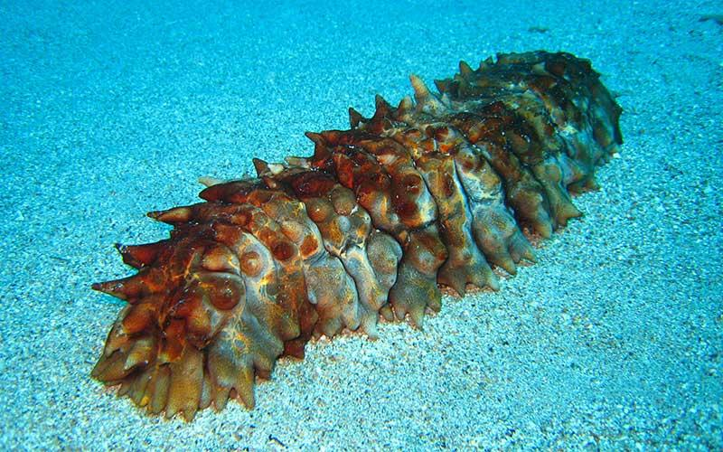

pepinos de mar
pepinos de mar
Las holoturias u holoturoideos, —conocidos vulgarmente como pepinos de mar
o cohombros de mar— son una clase del filo Echinodermata que incluye animales
de cuerpo vermiforme alargado y blando que vive en los fondos de los mares de todo el mundo.
Imagene de pepinos de mar
